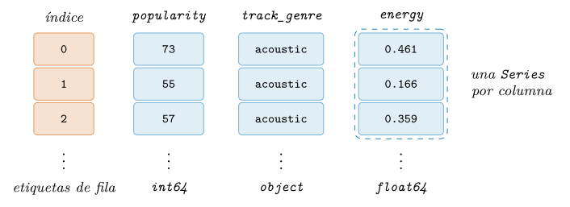
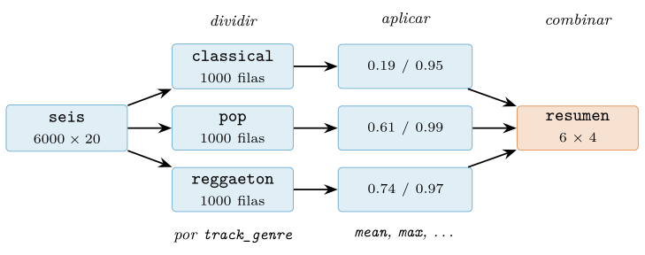
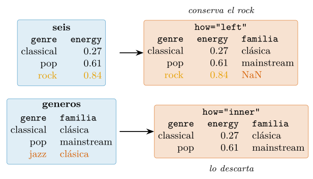
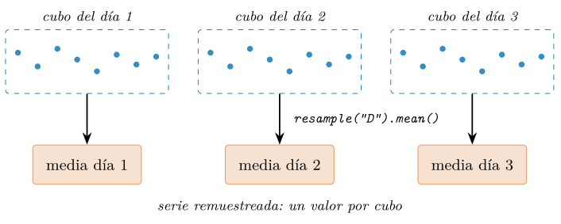
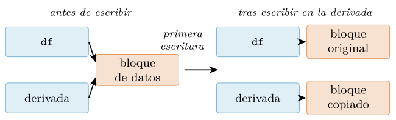

Capítulo 8. pandas: análisis tabular en profundidad
▶ Ejecutar este capítulo en Binder
La primera vez que se abre, Binder construye el entorno en la nube (unos 10-20 min); verás una pantalla de progreso. Después queda en caché y abre en segundos. Si parece que no responde, espera a que termine de construirse o vuelve a intentarlo.
Si NumPy es la base numérica del ecosistema, pandas es la herramienta con la que la mayoría de los analistas pasa la mayor parte del día. Su aportación central es el DataFrame: una tabla con columnas nombradas, de tipos posiblemente distintos, con un índice (index) que etiqueta las filas y con centenares de métodos para transformarla (McKinney 2022). La creó Wes McKinney en 2008 para manipular series financieras con la agilidad de una hoja de cálculo y el rigor de un lenguaje de programación, y se presentó a la comunidad poco después (McKinney 2010). Este capítulo no es un recetario —para eso están la documentación oficial y los manuales de referencia (VanderPlas 2023)—, sino una explicación del modelo: qué es una Series, por qué un DataFrame es una colección de Series alineadas y cómo el índice gobierna cada operación. Sobre ese modelo estudiaremos la selección (§8.2), los datos ausentes (§8.3), los grupos (§8.4), las series temporales (§8.5) y el rendimiento (§8.6), hasta el caso integrador final (§8.7).
Nada de esto parte de cero. En el cap. 7 estudiamos el ndarray y su memoria contigua (§7.1): cada columna de un DataFrame es, por debajo, uno de esos arrays (Harris et al. 2020), y lo aprendido sobre tipos, vectorización y máscaras sigue vigente, solo que con etiquetas encima. En el cap. 5 dejamos un pipeline que producía un fichero Parquet con un catálogo de música (§5.10): será materia prima de este capítulo. El cap. 9 presentará polars y DuckDB, cuyo contraste exige conocer bien pandas, y el cap. 10 usará pandas para limpiar datos reales. Nota de versión: esta edición se ha verificado con pandas 2.3.3, con la serie 3.x ya publicada; el modelo es estable desde hace años, y la prosa se apoya en los conceptos, no en los detalles de la versión menor (The pandas development team 2026b).
Series y DataFrame: el modelo de datos
Dos estructuras sostienen el capítulo: la Series, un array unidimensional con etiquetas, y el DataFrame, una colección de Series que comparten índice. Las presentaremos en ese orden (§8.1.1, §8.1.2), examinaremos la alineación automática (§8.1.3) y cerraremos viendo cómo se construye —y, sobre todo, cómo se carga— un DataFrame (§8.1.4).
La Series: un array con etiquetas
Una Series es la suma de dos piezas que ya conocemos por separado: un array de NumPy con los valores y un índice con una etiqueta por elemento; se añaden un nombre opcional (name), que la identificará como columna, y el dtype heredado del array subyacente. Construyamos una con la popularidad de las tres primeras pistas del catálogo que cargaremos enseguida, numeradas desde 1:
import pandas as pd
popul = pd.Series([73, 55, 57],
index=[1, 2, 3], name="popularity")
print(popul)
# 1 73
# 2 55
# 3 57
# Name: popularity, dtype: int64
print(popul.to_numpy()) # [73 55 57]
print(popul.loc[2]) # 55 (por etiqueta: la pista 2)
print(popul.iloc[-1]) # 57 (por posicion: la ultima)La impresión muestra la estructura: a la izquierda las etiquetas —aquí, el número de cada pista—, a la derecha los valores y, debajo, el nombre y el tipo; to_numpy devuelve el array desnudo que vive dentro. Si no se pasa index, pandas fabrica uno posicional: toda Series tiene índice siempre. Etiqueta y posición son coordenadas distintas, con un accesor para cada una: .loc espera etiquetas y .iloc, posiciones enteras; con etiquetas enteras como estas, el corchete directo popul[2] es ambiguo y conviene evitarlo (§8.2). El papel habitual de la Series es ser columna de un DataFrame.
El DataFrame: columnas que comparten índice
Un DataFrame es una colección ordenada de Series que comparten el mismo índice de filas: cada columna tiene su propio dtype, homogéneo dentro de ella y posiblemente distinto del de sus vecinas. Es la disciplina de tipos de la §7.1.2 aplicada columna a columna: tabla heterogénea, arrays homogéneos. Recuperemos el Parquet que dejó nuestro pipeline del cap. 5 (§5.10): el catálogo de música, una fila por pista y un rasgo de audio por columna, con la forma del dataset real de Spotify (maharshipandya 2022):
musica = pd.read_parquet("data/processed/musica.parquet")
print(musica.shape) # (113999, 20)
print(musica.dtypes.value_counts())
# float64 9
# object 5
# int64 5
# bool 1
# Name: count, dtype: int64El atributo shape sigue la convención (filas, columnas) de NumPy, y dtypes —en plural— devuelve una Series con el tipo de cada columna, aquí resumida por value_counts: nueve rasgos continuos en float64, cinco enteros (popularity, duration_ms, key…), la bandera explicit en bool y cinco columnas de texto —identidad y género— en object, el tipo comodín que en el capítulo anterior mirábamos con recelo (§8.6). El artefacto llega limpio y con los anchos por defecto de pandas; no hay esquema compacto que preservar, así que lo afinaremos nosotros en la §8.3, empezando por llevar track_genre a category. head(n) muestra las primeras \(n\) filas, aquí solo unas columnas:
cols = ["track_name", "track_genre", "popularity", "energy"]
print(musica[cols].head(3))
# track_name track_genre popularity energy
# 0 Comedy acoustic 73 0.461
# 1 Ghost - Acoustic acoustic 55 0.166
# 2 To Begin Again acoustic 57 0.359Ahí está la popularidad de las tres pistas de la Series inicial, ahora como filas. Extraer una columna, musica["track_genre"], devuelve la Series que la encarna. La figura 8.1 resume la anatomía —cada fila una observación, cada columna una variable: la convención de datos ordenados (tidy data) (Wickham 2014)—.

DataFrame. Anatomía de un DataFrame (tres de las veinte columnas del catálogo): índice compartido a la izquierda y una Series por columna con su dtype; compartir las etiquetas de fila es la base de la alineación automática.El índice como contrato: la alineación automática
El índice no es un adorno: gobierna cómo se combinan los datos. Cuando dos objetos de pandas se operan, no se emparejan por posición, como haría NumPy, sino por etiqueta: es la alineación (alignment) automática. Sumemos la energy de dos listas de pistas cuyos números no coinciden del todo:
lista1 = pd.Series([0.472, 0.965, 0.797],
index=[1, 2, 3], name="energy") # pistas 1-3
lista2 = pd.Series([0.690, 0.731, 0.317],
index=[2, 3, 4], name="energy") # pistas 2-4
print(lista1 + lista2)
# 1 NaN
# 2 1.655
# 3 1.528
# 4 NaN
# Name: energy, dtype: float64El resultado contiene la unión de las etiquetas: donde ambas series tienen valor, la suma empareja las pistas correctas aunque ocupen posiciones distintas; donde falta una, aparece NaN. La idea es potente —combina fuentes que no llegan en el mismo orden ni con las mismas filas sin una línea de emparejamiento— y a la vez fuente clásica de sorpresas: nadie avisa de los NaN ni del orden por etiqueta del resultado. Si la ausencia tiene un neutro razonable, la versión método lo declara: lista1.add(lista2, fill_value=0.0) completa con ceros —mal relleno aquí: un rasgo que falta no es energía nula—; los ausentes tendrán sección propia (§8.3).
La alineación explica por qué conviene que el índice signifique algo. set_index promociona una columna a índice y reset_index deshace el movimiento: en cuanto el puesto de una pista ejerza de índice (§8.2), la consulta .loc[8] recuperará la pista número ocho, una etiqueta con significado en lugar de una posición accidental. Ambas operaciones devuelven un DataFrame nuevo en vez de modificar el original —patrón general de pandas sobre el que volveremos con la copia al escribir (Copy-on-Write, CoW) en la §8.6—, y en un DataFrame la alineación opera en los dos ejes a la vez: filas por etiqueta y columnas por nombre.
Construir un DataFrame: del diccionario al fichero
Hasta aquí el DataFrame nos ha llegado hecho. Para fabricar uno pequeño —una tabla de referencia, un ejemplo de prueba— el constructor acepta un diccionario de listas o de arrays: cada clave se vuelve columna y todas comparten el índice posicional de fábrica. Adelantemos las medias de energy de tres géneros, cifras que sabremos calcular al agrupar en la §8.4:
gen = pd.DataFrame({
"genero": ["pop", "rock", "classical"],
"energia_media": [0.606, 0.679, 0.190], # medias por genero (8.4)
})
print(gen.dtypes)
# genero object
# energia_media float64
# dtype: object
print(gen.set_index("genero").loc["rock"])
# energia_media 0.679
# Name: rock, dtype: float64Cada lista se ha convertido en un array con su dtype inferido —object para el texto y float64 para las medias, los anchos por defecto de la §7.1.2—, y el set_index recién anunciado promociona el género a índice para consultar cada ficha por su nombre. Una tabla así reaparecerá como catálogo de géneros en la §8.4.
Fuera de los libros, sin embargo, casi nunca se construye la tabla a mano. pd.read_csv y pd.``read_parquet —con sus simétricos to_csv y to_parquet— conectan el DataFrame con los formatos del cap. 5: allí quedaron el CSV y sus trampas (§5.3) y el formato columnar (§5.5), y una sola línea nos ha devuelto aquel pipeline completo; el catálogo de lectores y escritores está en la guía de E/S de pandas (The pandas development team 2026a). info() resume lo cargado:
musica.info()
# <class 'pandas.core.frame.DataFrame'>
# RangeIndex: 113999 entries, 0 to 113998
# Data columns (total 20 columns):
# # Column Non-Null Count Dtype
# --- ------ -------------- -----
# 0 track_id 113999 non-null object
# ...
# 4 popularity 113999 non-null int64
# ...
# 19 track_genre 113999 non-null object
# dtypes: bool(1), float64(9), int64(5), object(5)
# memory usage: 16.6+ MBDos detalles del resumen anticipan el capítulo. Las veinte columnas tienen 113 999 valores no nulos: el catálogo llega sin ausentes, y el defecto que más se le parece —157 pistas con tempo 0, un imposible físico— lo trataremos como tal en la §8.3. Y es el mismo catálogo que el cap. 5 consultó con DuckDB sobre una muestra: cuando pandas lo agrupe por género en la §8.4, reproduciremos en pandas aquella misma clase de agregación SQL. El fichero volverá a escena en el caso integrador (§8.7); el código del capítulo acompaña al libro en src/cap08_pandas.py.
Selección, filtrado e indexado: loc, iloc y el booleano
Si el modelo de datos de la sección 8.1 era el mapa, esta sección es la circulación: cómo llegar a una fila, a una columna o a un subconjunto arbitrario del DataFrame. pandas ofrece varias vías de acceso, y confundirlas es una fuente habitual de errores (McKinney 2022). Las reglas caben en tres frases: df.loc selecciona por etiqueta, df.iloc por posición entera, y el corchete directo df[...] queda reservado, en la práctica, a extraer columnas y a filtrar filas con una máscara booleana (boolean mask). Lo que sigue desarrolla cada vía sobre el catálogo de música.
Etiqueta frente a posición: loc y iloc
Hasta ahora la tabla arrastra el índice autonumérico y la posición de cada pista es accidental. Para trabajar con etiquetas con significado, tomemos las 24 pistas de pop más populares, con su puesto (1 a 24) como índice y tres rasgos de audio por columna; el orden y el recorte usan las herramientas de esta misma sección, aquí nos interesa el resultado.
top = (musica[musica["track_genre"] == "pop"]
.sort_values("popularity", ascending=False)
.head(24).reset_index(drop=True)
[["energy", "danceability", "valence"]])
top.index = range(1, 25) # puesto en el top (1 = la mas popular)
top.shape # (24, 3): una fila por pista
top.loc[8, "energy"] # 0.537 (fila de etiqueta 8, columna energy)
top.loc[8] # la pista num. 8 completa, como Series
# energy 0.537
# danceability 0.445
# valence 0.131
# Name: 8, dtype: float64La forma general es df.loc[filas, columnas], donde cada eje admite una etiqueta suelta, una lista, un rango o una máscara (el filtro entre corchetes recién usado, que sistematizaremos en la §8.2.3). La fila devuelta es otra Series, aquí float64 porque los tres rasgos comparten tipo; en la tabla completa, musica.loc[0] mezclaría enteros, textos y booleanos y caería al comodín object: una fila es tan heterogénea como homogénea es una columna (§8.1).
Los rangos de loc esconden la primera sorpresa: son inclusivos en ambos extremos. En el capítulo 4 aprendimos que el slicing de Python excluye el límite superior, y esa convención se mantuvo en los arrays del capítulo 7. Con etiquetas la semiexclusión sería impracticable —pueden ser cadenas o fechas, sin un «siguiente» natural con el que cerrar el intervalo por fuera—, así que pandas optó por incluir ambos extremos (The pandas development team 2026b):
top.loc[2:5] # CUATRO filas: etiquetas 2, 3, 4 y 5 (ambos extremos)
# energy danceability valence
# 2 0.965 0.561 0.304
# 3 0.797 0.704 0.825
# 4 0.690 0.733 0.310
# 5 0.731 0.520 0.662
top.iloc[2:5] # TRES filas: posiciones 2, 3 y 4 (extremo final fuera)
# energy danceability valence
# 3 0.797 0.704 0.825
# 4 0.690 0.733 0.310
# 5 0.731 0.520 0.662iloc es el contrapunto exacto: ignora las etiquetas y trabaja con la posición entera, con la semántica de NumPy que vimos en la sección 7.4 (NumPy Developers 2026): el cero es la primera fila, los rangos excluyen el final y los negativos cuentan desde atrás. Admite listas de posiciones —el análogo del indexado sofisticado (fancy indexing) de la sección 7.4.4— y loc, listas de etiquetas:
top.loc[[8, 20], ["energy", "valence"]] # filas y columnas a la vez
# energy valence
# 8 0.537 0.131
# 20 0.296 0.120
top.loc[:, ["energy", "valence"]].shape # (24, 2): todas las filas
top.iloc[-1] # ultima fila (la pista num. 24), como en un array
top.loc[0] # KeyError: 0 -> no existe esa ETIQUETAEl último renglón resume la moraleja: los puestos van de 1 a 24, así que top.loc[0] fracasa mientras top.iloc[0] devuelve la pista más popular (puesto 1). Con el índice autonumérico de fábrica ambas nociones coinciden; en cuanto el índice significa algo, cada acceso debe declarar su intención (McKinney 2022).
El corchete directo: Series o DataFrame según la clave
En el capítulo 6 implementamos __getitem__ para dotar a nuestras clases del corchete de Python (Python Software Foundation, s. f.); pandas explota ese mecanismo con una regla que conviene interiorizar: el tipo de la clave determina el tipo del resultado. Una cadena devuelve una Series; una lista —aunque contenga un solo nombre—, un DataFrame:
musica["popularity"].head(3) # clave str -> Series
# 0 73
# 1 55
# 2 57
# Name: popularity, dtype: int64
type(musica[["popularity"]]) # clave list -> DataFrame de UNA columna
# <class 'pandas.core.frame.DataFrame'>
musica[["track_genre", "popularity"]].shape # (113999, 2)La distinción no es cosmética: Series y DataFrame tienen métodos distintos y operan distinto, de modo que media depuración en pandas consiste en descubrir que se tenía uno donde se esperaba el otro; entender este doble despacho evita la mitad de los tropiezos del capítulo. La misma regla explica los «corchetes dobles»: los exteriores son el __getitem__; los interiores, una lista.
Existe un atajo tentador: leer una columna como atributo, musica.popularity. Es cómodo en la consola, pero desaconsejamos escribirlo en código que deba perdurar (VanderPlas 2023): falla con nombres que no son identificadores (espacios, guiones), colisiona con métodos del objeto (una columna count queda eclipsada por el método homónimo) y, lo más peligroso, la asignación por atributo no crea columnas y en pandas 2.3 ni siquiera avisa:
musica.popularity.head(2) # lectura, igual que musica["popularity"]
musica.nueva = 0 # ...pero esto NO crea la columna "nueva"
"nueva" in musica.columns # False (y sin error ni aviso alguno)Para crear o reemplazar columnas, la vía canónica es la asignación con corchete y cadena: la expresión de la derecha se evalúa vectorizada, como operábamos en el capítulo 7, y un escalar rellena la columna:
musica["dur_s"] = musica["duration_ms"] / 1000 # ms -> s, sin bucles
musica.dtypes.tail(3)
# time_signature int64
# track_genre object
# dur_s float64
# dtype: objectCerramos con una rareza histórica: el corchete directo con un rango (musica[0:3]) no selecciona columnas sino filas, por posición (The pandas development team 2026b); rompe la simetría de la interfaz y preferimos reservar el corchete para columnas y máscaras.
Filtrado booleano: máscaras, isin y query
El filtrado por condición es, con permiso de groupby (§8.4), la operación estrella del análisis tabular, y funciona con el mismo espíritu que las máscaras de las secciones 7.2.3 y 7.4.3: una comparación vectorizada produce una Series booleana que, aplicada al DataFrame, conserva las filas donde vale True; la única novedad es que la máscara viaja con su índice y se alinea por etiqueta:
mask = musica["popularity"] > 90 # Series booleana, alineada por indice
mask.sum() # 68 pistas superan 90 de popularidad
altas = musica[mask]
altas.shape # (68, 21)Para combinar condiciones se usan los operadores a nivel de elemento &, | y ~, y aquí acechan dos errores clásicos. El primero es de precedencia: & liga más fuerte que las comparaciones, así que sin paréntesis la expresión musica["track_genre"] == "pop" & musica["popularity"] > 80 intentaría evaluar primero "pop" & musica["popularity"], que no significa nada (VanderPlas 2023); la regla práctica es cada condición, entre paréntesis, siempre. El segundo es recurrir a and y or, que no funcionan: piden el valor de verdad del objeto entero —el __bool__ del modelo de datos del capítulo 6 (Python Software Foundation, s. f.)— y una Series de más de cien mil booleanos se niega a resumirse en uno, igual que los arrays de la sección 7.2.3:
mask = (musica["track_genre"] == "pop") & (musica["popularity"] > 80)
musica[mask].shape # (114, 21): grandes exitos del pop
musica[(musica["track_genre"] == "pop") and (musica["popularity"] > 80)]
# ValueError: The truth value of a Series is ambiguous. ...Dos ayudas completan el repertorio. El método isin comprueba la pertenencia a un conjunto y ahorra rosarios de |; y query evalúa la condición escrita como cadena, donde —por fin— and y or sí se admiten, porque la interpreta pandas y no Python; con @ interpola variables externas (The pandas development team 2026b). Vuelve legibles los filtros largos, pero es una alternativa ocasional, no la base: la máscara explícita es más general y componible.
dos = musica[musica["track_genre"].isin(["pop", "rock"])]
dos.shape # (2000, 21): pop y rock
musica[~musica["track_genre"].isin(["pop", "rock"])].shape # (111999, 21)
musica.query("track_genre == 'pop' and popularity > 80").shape # (114, 21)Queda la jugada que une esta subsección con la primera: loc acepta una máscara como indexador de filas, y permite seleccionar y asignar de una sola vez. Marquemos las pistas que superan un umbral ilustrativo de 90 de popularidad:
musica["exito"] = False
musica.loc[musica["popularity"] > 90, "exito"] = True
musica["exito"].sum() # 68
musica.loc[musica["exito"], "track_genre"].value_counts().head(4)
# track_genre
# pop 12
# latin 10
# reggae 9
# latino 9
# Name: count, dtype: int64Los 68 grandes éxitos se reparten entre muchos géneros, con el pop a la cabeza (12) seguido de los estilos latinos y el reggae: el éxito no es patrimonio de un solo estilo. La forma df.loc[máscara, columna] = valor es la manera correcta de modificar un subconjunto; su pariente musica[máscara]["exito"] = ..., que parece equivalente, puede acabar escribiendo sobre una copia intermedia: es el problema de vista frente a copia, ligado al indexado encadenado (chained indexing), que abordaremos en la sección 8.6. Con las vías de acceso despejadas, podemos enfrentarnos al dato que no está: los valores ausentes de la sección 8.3.
Datos ausentes, tipos y el backend PyArrow
Los datos reales tienen huecos: un sensor se avería, una medición no pasa la validación, una encuesta queda a medias, y antes o después todo dataset presenta celdas vacías cuyo tratamiento condiciona cada cálculo posterior. Esta sección recorre las tres capas del problema: cómo se representa un dato ausente (y la sorpresa que ello depara a los enteros), qué sistema de tipos hay más allá de los dtype de NumPy de §7.1.2, y qué aporta el backend PyArrow sobre el que pivota pandas 3.
NaN: el ausente heredado de la coma flotante
La música llega sin ausentes, pero esconde otra clase de defecto: 157 pistas traen tempo 0, un imposible físico —ninguna canción late a cero pulsaciones por minuto—. Marcarlas como ausentes es el primer gesto de limpieza (recargamos la tabla, sin las columnas que añadimos en la §8.2):
import numpy as np
import pandas as pd
musica = pd.read_parquet("data/processed/musica.parquet")
musica.loc[musica["tempo"] == 0, "tempo"] = np.nan # el 0 no es un tempo
print(musica["tempo"].dtype) # float64
print(musica["tempo"].isna().sum()) # 157
print(round(100 * musica["tempo"].isna().mean(), 2)) # 0.14Un 0,14 % de tempos ausentes: poquísimos, pero un 0 tomado al pie de la letra arruina cualquier media y delata un fallo de extracción. El método isna() devuelve una Series booleana que marca los huecos (su complementario es notna()), y las agregaciones los ignoran por defecto: musica["tempo"].mean() promedia los 113 842 tempos válidos.
¿Y qué es exactamente ese ausente? En los dtype de NumPy, el centinela clásico es np.nan, el NaN (Not a Number) que la norma IEEE 754 define como valor especial de la coma flotante (IEEE 2019) y que ya nos visitó en §2.6.2. NaN es un flotante, así que solo cabe en columnas flotantes; los enteros no reservan ningún patrón de bits para «no hay dato», y pandas resuelve el conflicto con una coerción documentada (The pandas development team 2026b): basta un único ausente para que toda la columna int64 pase a float64. Comprobémoslo:
s = pd.Series([1, 2, 3])
print(s.dtype) # int64
s.loc[1] = np.nan # un solo ausente...
print(s.dtype) # float64 (...y toda la columna cambia)La trampa muerde en cuanto la columna contiene identificadores: un código postal 28001 convertido en 28001.0 ya no casa con la clave de otra tabla. Nuestra columna tempo nació flotante, así que sus 157 huecos no la degradan; localizados estos, hay dos familias de respuesta. Descartar: dropna() elimina las filas afectadas, y su parámetro subset acota qué columnas cuentan como criterio. O rellenar: fillna() sustituye los ausentes por un valor que nosotros elegimos, aquí la mediana, más robusta que la media ante valores extremos.
medidas = musica.dropna(subset=["tempo"])
print(medidas.shape) # (113842, 20)
mediana = musica["tempo"].median()
print(round(mediana, 2)) # 122.02
imputado = musica.fillna({"tempo": mediana})
print(imputado["tempo"].isna().sum()) # 0Ninguna de las dos opciones es neutral. Descartar filas sesga el análisis si los huecos no se reparten al azar (quizá el fallo de extracción golpea más a un género que a otro), y rellenar inventa datos: la media apenas se mueve (122,32) pero la desviación típica baja de 29,65 a 29,63 y, peor, esa mediana global mezcla géneros de ritmos muy distintos: imputar 122 BPM al hueco de una balada lenta o de un tema acelerado fabrica un dato dudoso. Rellenar por grupo será posible con el transform de la §8.4; la imputación con fundamento estadístico la abordaremos en el capítulo 10 (VanderPlas 2023).
Queda una última rareza: por definición de IEEE 754, NaN no es igual a nada, ni siquiera a sí mismo (IEEE 2019). Por eso comparar con == jamás encuentra ausentes; la vía correcta son isna() y notna():
print(np.nan == np.nan) # False
print((musica["tempo"] == np.nan).sum()) # 0 (comparar no sirve)
print(musica["tempo"].isna().sum()) # 157 (isna si)El sistema de tipos: de NumPy a los dtypes anulables
La coerción a float64 no es un capricho de pandas sino el precio de apoyarse en los dtype de NumPy, pensados para arrays numéricos compactos y no para tablas con huecos. Sobre esa base, pandas añade tipos de extensión propios —category, datetime64 con zona horaria— y, desde la versión 1.0, una familia de tipos anulables (nullable) con su propio centinela, pd.NA (The pandas development team 2026b). La mayúscula importa: Int64 es el entero anulable de pandas; int64, el de NumPy que acabamos de ver claudicar. Convertir es un astype, y el resultado conserva el tipo aunque haya ausentes; rescatemos la serie s que acaba de caer a float64:
ent = s.astype("Int64")
print(ent)
# 0 1
# 1 <NA>
# 2 3
# dtype: Int64La serie vuelve a ser entera y el hueco aparece como <NA>, un ausente de pleno derecho que no arrastra la columna a la coma flotante. pd.NA sigue además una lógica ternaria: pd.NA == pd.NA devuelve <NA>, porque comparar dos incógnitas da otra incógnita (The pandas development team 2026b). La familia se completa con Float64, boolean y el string anulable que retomaremos enseguida.
Otro tipo de extensión con impacto directo en la memoria es category, idóneo para columnas de texto con pocos valores distintos: almacena cada valor una sola vez y sustituye la columna por códigos enteros que apuntan a ese catálogo, la codificación por diccionario (dictionary encoding) que vimos en §5.5. La columna track_genre —114 textos repetidos entre las 113 999 filas— es el ejemplo de manual, pero llegó como object: la convertimos nosotros. memory_usage(deep=True) —deep cuenta también los objetos Python apuntados, no solo los punteros— mide lo que se ahorra:
cat = musica["track_genre"].astype("category") # object -> category
print(musica["track_genre"].memory_usage(deep=True)) # 7304070
print(cat.memory_usage(deep=True)) # 125603
print(cat.cat.categories[:4])
# Index(['acoustic', 'afrobeat', 'alt-rock', 'alternative'], dtype='object')De 7 304 070 bytes a 125 603 —cifras medidas con el CPython 3.11 del lockfile: el tamaño de cada objeto str varía entre versiones del intérprete, aunque el orden se mantiene—: casi sesenta veces menos ya con estas ciento catorce mil filas; en una tabla de millones el ahorro se mide en gigabytes. Hay además dividendo de velocidad: agrupar por category opera sobre los códigos enteros, no sobre cadenas, algo que agradeceremos en §8.4. La regla práctica: si hay muchos menos valores distintos que filas, category compensa; si cada valor es único (un identificador), solo añade sobrecoste. Junto a datetime64[ns], que dota a las marcas de tiempo (timestamps) de su aritmética de calendario, estas conversiones con astype son la caja de herramientas mínima para domar los tipos de una tabla recién cargada (McKinney 2022).
El backend PyArrow y el paisaje de pandas 3
La tercera capa llegó con pandas 2.0 (abril de 2023): respaldar las columnas no con arrays de NumPy sino de Apache Arrow, el formato columnar en memoria que conocimos en §5.5.2 (Apache Software Foundation 2026). El backend PyArrow aporta tres cosas. Ausentes de primera clase: Arrow acompaña cada columna de un mapa de bits de validez, así que un entero o un booleano con huecos conserva su tipo, con pd.NA como centinela. Cadenas eficientes: en lugar de una columna object llena de punteros a objetos Python dispersos, Arrow guarda los textos en un búfer UTF-8 contiguo, más compacto y más rápido de recorrer. E interoperabilidad sin copia (zero-copy): una tabla respaldada por Arrow viaja a polars o DuckDB sin reserializar nada, un puente que explotaremos en el capítulo 9.
Activarlo al leer es un solo argumento, dtype_backend="pyarrow", disponible en toda la familia read_* desde pandas 2.0 (The pandas development team 2026b). Sobre el Parquet de la música:
musica_pa = pd.read_parquet("data/processed/musica.parquet",
dtype_backend="pyarrow")
print(musica_pa["energy"].dtype) # double[pyarrow]
print(musica_pa["track_genre"].dtype) # string[pyarrow]
print(musica_pa["energy"].iloc[:3])
# 0 0.461
# 1 0.166
# 2 0.359
# Name: energy, dtype: double[pyarrow]Los rasgos flotantes viajan como double[pyarrow] y las columnas de texto —identidad y género— como string[pyarrow], un búfer UTF-8 contiguo en lugar del reguero de punteros a objetos Python de object. Para un DataFrame ya construido, el método convert_dtypes(dtype_backend="pyarrow") hace la conversión equivalente; aplicado a nuestra tabla con los tempos ya marcados, los NaN se vuelven <NA> sin alterar el tipo:
conv = musica.convert_dtypes(dtype_backend="pyarrow")
print(conv["tempo"].dtype) # double[pyarrow]
print(conv["tempo"].isna().sum()) # 157 (ahora como <NA>)El paisaje de 2026: la serie 3.x de pandas —cuya primera versión, la 3.0.0, se publicó el 21 de enero de 2026— consolida dos decisiones largamente debatidas. La primera: las cadenas dejan de ser object y estrenan un dtype dedicado, str, respaldado por PyArrow si está instalado (con reserva sobre NumPy si no) y con la semántica clásica de NaN, no la de pd.NA, para minimizar rupturas (Van den Bossche 2024); el StringDtype anulable sigue existiendo como opción explícita (dtype="string"). La segunda es una no-decisión deliberada: la propuesta de convertir PyArrow en dependencia obligatoria se aplazó, de modo que pandas 3 funciona sin PyArrow; este sigue siendo un complemento opcional —muy recomendable—, no un requisito (Roeschke y Hoefler 2023). Se suma la copia al escribir (Copy-on-Write, CoW) como comportamiento por defecto, que trataremos en §8.6. Nuestra edición trabaja con pandas 2.3.3, la última de la serie 2.x, que ya permite anticipar el dtype de cadenas:
print(pd.Series(["pop", "rock"]).dtype) # object
pd.options.future.infer_string = True
print(pd.Series(["pop", "rock"]).dtype) # str (asi sera en pandas 3)Con los ausentes domesticados y los tipos bajo control, la tabla está lista para agregar, cruzar y resumir: empezamos por la operación reina del análisis tabular, el agrupamiento (§8.4).
Agrupar, unir y remodelar: groupby, merge y pivot
Hasta aquí hemos tratado el DataFrame como un bloque que se selecciona, se limpia y se transforma columna a columna. El análisis empieza de verdad cuando pedimos resúmenes por grupos, cruzamos la tabla con otras tablas y le cambiamos la forma para que la pregunta quede a la vista. Las tres operaciones están en el corazón del diseño de pandas desde su origen (McKinney 2010) y anticipan el vocabulario SQL del capítulo 9; sus listados quedan reunidos en src/cap08_pandas.py.
Dividir, aplicar y combinar con groupby
La estrategia que implementa groupby tiene nombre propio: dividir-aplicar-combinar (split-apply-combine) (McKinney 2022). Se divide la tabla en grupos según una o varias claves, se aplica una función a cada grupo por separado y se combinan los resultados. Para comparar sin ahogarnos en los 114 géneros, nos ceñiremos a un puñado —seis: pop, rock, classical, hip-hop, jazz y reggaeton, 6000 pistas—. La figura 8.2 lo esquematiza sobre ese subconjunto: una pista por fila, agrupada por track_genre.

groupby. Dividir-aplicar-combinar: la tabla se parte en seis grupos por track_genre (aquí tres), cada grupo se reduce (aquí, media / pico de energy) y los resultados se combinan en una tabla indexada por la clave.La sintaxis que recomendamos es la agregación nombrada: cada argumento de agg bautiza una columna del resultado y declara, como tupla, de qué columna sale y con qué función se reduce:
GENEROS = ["pop", "rock", "classical", "hip-hop", "jazz", "reggaeton"]
seis = musica[musica["track_genre"].isin(GENEROS)] # 6000 pistas
resumen = seis.groupby("track_genre", observed=True).agg(
media=("energy", "mean"),
mediana=("energy", "median"),
n=("energy", "count"),
pico=("energy", "max"),
)
print(resumen.round(3))
# media mediana n pico
# track_genre
# classical 0.190 0.142 1000 0.953
# hip-hop 0.683 0.690 1000 0.994
# jazz 0.353 0.332 1000 0.938
# pop 0.606 0.618 1000 0.986
# reggaeton 0.739 0.745 1000 0.969
# rock 0.679 0.703 1000 0.990La lectura se cuenta sola: classical, casi acústico, con energy media 0,190; reggaeton, el más eléctrico, con 0,739; y el pop en medio, con 0,606. Una agregación por grupo así —la misma que DuckDB expresa en una sola sentencia SQL (§5.10)— repetida en dos herramientas y contrastada es la prueba de cordura más barata que existe al migrar un cálculo, y la retomaremos en el cap. 9. Cada género aporta sus 1000 pistas al recuento, pues energy no tiene ausentes (§8.3), y el observed=True acompaña a la clave (véase el recuadro al final de la sección). Un matiz: seis.groupby("track_genre") por sí solo no calcula nada; devuelve un objeto DataFrameGroupBy perezoso que solo trabaja cuando le pedimos una agregación como las que practicamos en la §7.2.4.
No toda operación por grupos quiere reducir. Cuando necesitamos el estadístico del grupo difundido a las filas originales usamos transform, que devuelve una Series alineada con el índice. ¿Qué pistas superan la mediana de energy de su grupo, la de su género y su bandera explicit?
grupos = seis.groupby(["track_genre", "explicit"], observed=True)
print(grupos["energy"].transform("mean").head(3).round(2).tolist())
# [0.19, 0.19, 0.19]
mediana_grupo = grupos["energy"].transform("median")
altas = seis[seis["energy"] > mediana_grupo]
print(len(altas)) # 2958
print(altas["track_genre"].value_counts().sort_index())
# track_genre
# classical 497
# hip-hop 488
# jazz 481
# pop 496
# reggaeton 499
# rock 497
# Name: count, dtype: int64La clave puede ser una lista —hasta doce grupos, una pareja género-explicit cada uno—, y las tres primeras filas, de classical no explícito, reciben la media de energy de ese grupo: el 0,19 que adelantamos en la §8.1. El resultado, alineado, sirve directamente de máscara; los recuentos rondan la mitad de las 6 000 pistas sin clavarla, porque los empates con la propia mediana quedan fuera del > estricto. Comparar cada fila con el resumen de su propio grupo —no con el global, como la mediana única que descartamos en la §8.3— es el uso canónico de transform. El tercer verbo, filter, conserva o descarta grupos enteros según un predicado:
frecuentes = seis.groupby("track_genre", observed=True).filter(
lambda g: g["energy"].mean() >= 0.6)
print(frecuentes.shape) # (4000, 20)
print(frecuentes["track_genre"].unique())
# ['hip-hop' 'pop' 'reggaeton' 'rock']Sobreviven intactos —sin agregar— los cuatro géneros con energy media de al menos 0,6; classical y jazz, más calmados, caen enteros. Veremos en la §8.5 que resample no es más que un groupby con ventanas de tiempo por claves: todo lo dicho aquí se trasladará allí.
Unir tablas por claves: merge
Rara vez viven todos los datos en una sola tabla. La unión (merge/join) combina dos DataFrame emparejando filas cuyas claves coinciden, como el JOIN de SQL que escribiremos en el capítulo 9. Nuestras pistas identifican su género por una cadena; una ficha por género —su familia, si lleva voz— vive en un catálogo aparte que fabricamos con los géneros del dataset (maharshipandya 2022). merge empareja por columnas, así que si la clave ejerciera de índice bastaría recuperarla antes con reset_index:
generos = pd.DataFrame({
"track_genre": ["pop", "classical", "hip-hop", "jazz", "reggaeton"],
"familia": ["mainstream", "clásica", "urbana", "clásica", "urbana"],
"vocal": [True, False, True, False, True],
})
completo = seis.merge(generos, on="track_genre", how="left")
print(completo.shape) # (6000, 22)
print(completo.iloc[[0, -1]][["track_genre", "energy", "familia"]])
# track_genre energy familia
# 0 classical 0.268 clásica
# 5999 rock 0.838 NaN
print(completo["familia"].isna().sum()) # 1000: el rock, sin fichaEl parámetro how decide qué filas sobreviven: "inner" conserva solo las claves presentes en ambas tablas; "left", todas las de la izquierda, rellenando con NaN donde no hay pareja —ausentes que se tratan como vimos en la §8.3—; "right" es su simétrico y "outer" lo conserva todo. Elegirlo bien evita perder datos sin querer: con how="inner" este mismo cruce se queda en 5 000 filas y las 1 000 pistas de rock desaparecen en silencio (figura 8.3). Para auditar un cruce, indicator=True añade la columna _merge con el origen de cada fila: en un outer contra una versión del catálogo con un género fantasma k-pop, su value_counts arroja 5 000 both, 1 000 left_only y 1 right_only.

left frente a inner. La misma unión por track_genre: con "left", el rock (en amarillo) sobrevive con NaN en familia; con "inner", desaparece. El jazz (en bermellón) se pierde en ambos casos de la muestra; solo "outer" lo conservaría.El peligro más traicionero no es perder filas, sino duplicarlas. Si la clave se repite en ambas tablas, merge produce el producto cartesiano de las coincidencias —una relación muchos-a-muchos silenciosa— y cualquier estadístico posterior contará de más:
listas = pd.DataFrame({"track_genre": ["pop", "pop", "rock"],
"lista": ["Top 50", "Viral", "Rock Hits"]})
print(generos.merge(listas, on="track_genre", how="left"))
# track_genre familia vocal lista
# 0 pop mainstream True Top 50
# 1 pop mainstream True Viral
# 2 classical clásica False NaN
# 3 hip-hop urbana True NaN
# 4 jazz clásica False NaN
# 5 reggaeton urbana True NaN
generos.merge(listas, on="track_genre", how="left",
validate="one_to_one")
# MergeError: Merge keys are not unique in right dataset;
# not a one-to-one mergeEl género pop aparece dos veces: si después contamos pistas por familia, pesará el doble sin previo aviso. El antídoto es declarar la relación esperada con validate, que aborta la unión si los datos no la cumplen (The pandas development team 2026b): una línea en cada merge no trivial evita la clase de error que no estalla, solo sesga.
Remodelar la tabla: melt, pivot y pivot_table
Una misma información admite dos formas: la larga, con una fila por observación, y la ancha, con las variables desplegadas en columnas. El ideario de los datos ordenados (tidy data) —cada variable una columna, cada observación una fila— (Wickham 2014) nos da la regla práctica: la larga es el formato por defecto para analizar, porque es la que entienden groupby, merge y el remuestreo de la §8.5; la ancha, un formato de presentación.
El catálogo llega ancho por naturaleza —una fila por pista, un rasgo de audio por columna (maharshipandya 2022)—, ya ordenado. Dos remodelados nos sirven sobre él. El primero, melt, apila varias columnas en pares variable-valor: útil para tratar varios rasgos a la vez —graficarlos, agruparlos— sin repetir código columna a columna. Apilemos tres rasgos de las 6 000 pistas del puñado:
largo = seis.melt(id_vars="track_name",
value_vars=["energy", "danceability", "valence"],
var_name="rasgo", value_name="valor")
print(largo.shape) # (18000, 3): 6000 pistas x 3 rasgos
print(largo.head(3))
# track_name rasgo valor
# 0 Zara Zara energy 0.268
# 1 Kajra Re energy 0.898
# 2 Zara Zara - Lofi energy 0.638Las 6 000 filas se convierten en \(6\,000 \times 3 = 18\,000\): cada pista aparece una vez por rasgo, con el nombre del rasgo en rasgo y su número en valor. El segundo remodelado, pivot_table, resume en una tabla dinámica —como las de una hoja de cálculo (VanderPlas 2023)—: filas por una clave, columnas por otra, una agregación en cada celda. Crucemos género y explicit sobre la popularidad:
dinamica = seis.pivot_table(index="track_genre", columns="explicit",
values="popularity", observed=True)
print(dinamica.round(1))
# explicit False True
# track_genre
# classical 13.1 NaN
# hip-hop 44.5 23.3
# jazz 13.6 14.0
# pop 47.0 54.4
# reggaeton 22.2 30.1
# rock 18.6 27.3Cada celda es la popularidad media de un género con y sin la marca explicit; el NaN de classical delata que no hay temas clásicos explícitos. ¿Por qué pivot_table y no pivot? Porque pivot es estricto: exige que cada combinación índice-columna aparezca a lo sumo una vez, y aquí hay mil pistas por casilla:
seis.pivot(index="track_genre", columns="explicit",
values="popularity")
# ValueError: Index contains duplicate entries, cannot reshapepivot_table, en cambio, agrega los duplicados con aggfunc (la media, por defecto). Bien usado, remodela y resume en un solo gesto; mal usado, promedia duplicados que no sabíamos tener: aquel ValueError es la única señal que distingue «remodelar» de «remodelar y agregar sin avisar». En el proyecto integrador de la §8.7 combinaremos las tres piezas —agrupar, unir, remodelar— sobre este mismo dataset.
Series temporales
pandas nació para esto: antes de ser la navaja suiza del análisis tabular fue una herramienta interna para series temporales financieras en un fondo de inversión, y esa genealogía explica que su soporte de fechas sea de primera clase (McKinney 2022). Tres piezas se combinan: el tipo datetime64[ns], que representa instantes; el DatetimeIndex, un índice que entiende de calendarios; y una familia de operaciones —remuestreo, ventanas móviles, desplazamientos— que solo tienen sentido en orden cronológico. Nuestro catálogo, en cambio, no trae eje temporal: los rasgos describen cada pista, no su historia. Ilustraremos la maquinaria con una serie sintética de reproducciones diarias; con un registro de escuchas real —fecha a fecha— estas operaciones aplican igual.
Del texto al instante: fechas como tipo de primera clase
Todo empieza por convertir texto en fechas. La función pd.``to_datetime acepta cadenas en casi cualquier formato razonable y devuelve objetos Timestamp. Con ISO 8601 ("2026-03-15") no hay ambigüedad, pero las fechas europeas tipo "03/02/2026" son una trampa: por defecto, pandas interpreta el primer campo como mes; dayfirst=True corrige la lectura y format="%d/%m/%Y" la hace explícita —y más rápida sobre millones de filas—. Con errors="coerce", lo que no puede interpretarse se convierte en NaT (Not a Time), pariente temporal del NaN que conocimos en la §8.1.
import pandas as pd
pd.to_datetime("2026-03-15") # Timestamp('2026-03-15 00:00:00')
pd.to_datetime("03/02/2026") # Timestamp('2026-03-02 00:00:00'): mes primero
pd.to_datetime("03/02/2026", dayfirst=True)
# Timestamp('2026-02-03 00:00:00')
pd.to_datetime(pd.Series(["2026-03-15", "sin fecha"]), errors="coerce")
# 0 2026-03-15
# 1 NaT
# dtype: datetime64[ns]Internamente, datetime64[ns] cuenta nanosegundos desde el 1 de enero de 1970 en un entero de 64 bits; el rango va de septiembre de 1677 a abril de 2262 (The pandas development team 2026b): sobra para sensores, no para historia medieval.
La segunda pieza es el índice temporal: pd. date_range genera un DatetimeIndex regular (inicio, número de periodos, frecuencia). Construyamos una serie sintética de reproducciones diarias (en miles) con el generador de semilla declarada que presentamos en la §7.5.3:
import numpy as np
rng = np.random.default_rng(2026) # semilla declarada
fechas = pd.date_range("2026-01-01", periods=365, freq="D")
serie = pd.Series(rng.normal(20, 5, 365), index=fechas)
serie.round(2).head(3)
# 2026-01-01 16.03
# 2026-01-02 21.20
# 2026-01-03 10.52
# Freq: D, dtype: float64Un DatetimeIndex habilita el indexado parcial por cadena (partial string indexing): una cadena con solo el año o el mes selecciona el periodo entero, más legible que la máscara booleana equivalente.
len(serie["2026-03"]) # 31: todo marzo
round(serie["2026-03"].mean(), 2) # 19.13
round(serie["2026-03-15"], 2) # 17.09 (un dia concreto: escalar)Cuando las fechas no viven en el índice sino en una columna, el accesor .dt expone sus componentes vectorizados: year, month, dayofweek (lunes \(=0\)), hour y compañía: la vía natural para derivar variables de calendario antes de agrupar; el repertorio completo ocupa un capítulo en VanderPlas (2023).
df = pd.DataFrame({"fecha": pd.to_datetime(
["2026-01-01", "2026-03-15", "2026-12-31"])})
df["fecha"].dt.year.tolist() # [2026, 2026, 2026]
df["fecha"].dt.dayofweek.tolist() # [3, 6, 3] (jueves, domingo, jueves)El remuestreo: agrupar por tiempo
El remuestreo (resampling) cambia la frecuencia de una serie: de horas a días, de días a meses. Conviene pensarlo como un groupby temporal: resample("D") asigna cada marca de tiempo a un cubo diario y aplica a cada cubo una agregación, el mismo patrón dividir-aplicar-combinar que estudiamos en la §8.4.1, con cubos definidos por el calendario en lugar de por una columna categórica (figura 8.4).

Sobre nuestra serie diaria, el paso a frecuencia mensual es una línea, y agg admite varias funciones, como en la §8.4:
mensual = serie.resample("ME").mean() # ME: fin de mes (month end)
mensual.round(2).head(4)
# 2026-01-31 19.80
# 2026-02-28 22.81
# 2026-03-31 19.13
# 2026-04-30 19.48
# Freq: ME, dtype: float64
serie.resample("ME").agg(["mean", "max", "count"]).round(2).head(3)
# mean max count
# 2026-01-31 19.80 29.12 31
# 2026-02-28 22.81 35.75 28
# 2026-03-31 19.13 31.27 31Los alias de frecuencia son cadenas cortas: "D" para días, "h" para horas, "W" para semanas, "ME" para fin de mes, "QE" para fin de trimestre y "YE" para fin de año (The pandas development team 2026b). Cuidado con el material antiguo: los alias "M", "Q" e "Y" quedaron deprecados en pandas 2.2 (enero de 2024) y se eliminaron en la versión 3.0; escribiremos siempre los nuevos ("D" y "h" no cambian). Muchos tutoriales usan aún la grafía vieja, que en pandas 2.x provoca un aviso y en 3.0, un error.
El remuestreo también funciona hacia arriba, y ahí conviene frenar: reducir la frecuencia (downsampling) resume datos que existen; aumentarla (upsampling) fabrica filas que nadie midió. asfreq reindexa dejando huecos y ffill los rellena hacia delante (forward fill):
diaria = mensual.asfreq("D") # de 12 valores mensuales a 335 filas
diaria.isna().sum() # 323: casi todo son huecos
diaria.ffill().round(2).head(3)
# 2026-01-31 19.8
# 2026-02-01 19.8
# 2026-02-02 19.8
# Freq: D, dtype: float64Una serie «diaria» en la que 323 de 335 valores son copias no contiene más información que la mensual de partida: el relleno es legítimo para alinear índices, pero debe declararse, porque el estadístico hereda la invención.
Ventanas móviles, desplazamientos y zonas horarias
La ventana móvil (rolling window) responde a otra pregunta: no «¿qué pasó cada mes?», sino «¿cuál es la tendencia local alrededor de cada punto?». rolling(window=7).mean() calcula, para cada día, la media de ese día y los seis anteriores: el suavizado clásico que elimina el ruido del ciclo semanal. Los seis primeros valores son NaN, porque la ventana aún no está completa; min_periods relaja esa exigencia:
media7 = serie.rolling(window=7).mean()
media7.round(2).iloc[5:8]
# 2026-01-06 NaN
# 2026-01-07 19.27
# 2026-01-08 20.06
# Freq: D, dtype: float64
serie.rolling(window=7, min_periods=1).mean() # sin NaN al principioCon center=True la ventana se centra en cada punto: describe mejor el pasado, pero queda descartada en contextos predictivos, porque mira el futuro. La otra pareja imprescindible es shift y diff: desplazar la serie un paso y restar, base de variaciones diarias y rendimientos.
serie.diff().round(2).head(3) # variacion: serie - serie.shift(1)
# 2026-01-01 NaN
# 2026-01-02 5.17
# 2026-01-03 -10.68
# Freq: D, dtype: float64Dos frases sobre zonas horarias. tz_localize("Europe/Madrid") declara que unas marcas de tiempo ingenuas están en hora peninsular y tz_convert las traduce a otra zona; un registro de escuchas suele venir en la hora local del oyente (UTC+1 en invierno, UTC+2 en verano), detalle irrelevante con una sola fuente y crítico al cruzarla con otra en UTC.
local = serie.tz_localize("Europe/Madrid")
local.index[0] # Timestamp('2026-01-01 00:00:00+0100', tz='Europe/Madrid')
local.tz_convert("UTC").index[0]
# Timestamp('2025-12-31 23:00:00+0000', tz='UTC')Obsérvese que el instante es el mismo y hasta el día cambia de nombre: razón de más para fijar la zona horaria antes de unir fuentes. Cubierta la mecánica —convertir, indexar, remuestrear, suavizar—, el análisis serio de series temporales (tendencia, estacionalidad, predicción) es materia del texto de referencia de Hyndman y Athanasopoulos (2021); volveremos a él con las herramientas de visualización y de modelado de los caps. 11 y 13.
Trampas de rendimiento y Copy-on-Write
pandas hereda de NumPy la maquinaria vectorizada del cap. 7, pero la envuelve en capas de comodidad que esconden dos trampas clásicas. La primera cuesta rendimiento: iterar filas en lugar de operar sobre columnas. La segunda cuesta corrección: asignar sobre una selección encadenada sin saber si escribimos en el original o en una copia. Diagnosticaremos ambas y presentaremos el modelo que las resuelve de raíz: la copia al escribir (Copy-on-Write, CoW), opcional en pandas 2.x y único desde pandas 3.0 (Van den Bossche 2023). Los listados corren sobre el entorno de esta edición (pandas 2.3.3), y las reglas que fijemos aquí gobernarán el caso integrador de la §8.7.
Primera trampa: no iterar filas
En la §3.3.5 aprendimos a sustituir bucles por operaciones sobre colecciones, y en la §7.2 vimos por qué: cada vuelta de un bucle paga la sobrecarga del intérprete; la operación vectorizada la paga una sola vez y delega el recorrido en código compilado. La versión tabular de aquel error es recorrer un DataFrame fila a fila con iterrows(), itertuples() o un bucle sobre range(len(df)). Sigamos con el catálogo de música (§8.1) y pasemos cada duración de milisegundos a segundos de las dos maneras:
# Version lenta: recorrer las filas una a una
segs = []
for _, fila in musica.iterrows():
segs.append(fila["duration_ms"] / 1000)
# Version vectorizada: operar sobre la columna entera
musica["dur_s"] = musica["duration_ms"] / 1000
print(round(musica["dur_s"].mean(), 2))
# 228.03Ambas producen los mismos números, pero no al mismo precio. iterrows() construye una Series nueva por cada fila, con su índice y su conversión de tipos: en nuestra máquina tarda del orden de quince mil veces más que la versión vectorizada en estas 113 999 pistas (The pandas development team 2026b). itertuples(), que devuelve tuplas con nombre mucho más ligeras, recorta la distancia —en torno al millar de veces más lento—, pero sigue siendo un bucle en Python: mejora la constante, no la categoría del problema. Y el bucle que asigna celda a celda con df.loc[i, ...] suma además una escritura escalar por vuelta.
La estrategia correcta es la misma del cap. 7: expresar el cálculo sobre columnas enteras. Casi todo lo que parece exigir un bucle tiene traducción vectorizada: la aritmética y las comparaciones trabajan columna a columna, los métodos de cadena y de fechas cubren el resto de tipos, y lo que es «por grupo» se expresa con groupby, agg y transform, como practicamos en la §8.4. El último recurso es apply, que aplica una función de Python a cada elemento o fila: más legible que un bucle explícito, pero con el mismo peaje por elemento. Aquí, musica["duration_ms"].apply(lambda v: v / 1000) tarda ya unas ochenta veces más que la división vectorizada, porque apply es un bucle disfrazado (McKinney 2022). Reservémoslo para lógica irreducible.
Segunda trampa: ¿vista o copia?
La segunda trampa no cuesta segundos, sino resultados incorrectos. En la §7.4 distinguimos vistas y copias en NumPy (§7.4.2): la rebanada básica era una vista y la indexación avanzada, una copia, con reglas fijas. En el pandas clásico la situación era peor, porque la biblioteca no garantizaba cuál de las dos cosas devolvía una selección: dependía de los tipos de las columnas y de la disposición en bloques de la §8.1. El problema estalla en la asignación encadenada (chained assignment): supongamos que una revisión nos pide anular —poner a NaN— los 68 grandes éxitos que marcamos en la §8.2.
musica[musica["popularity"] > 90]["popularity"] = np.nan
# SettingWithCopyWarning:
# A value is trying to be set on a copy of a slice from a
# DataFrame.
# Try using .loc[row_indexer,col_indexer] = value instead
print(musica["popularity"].isna().sum())
# 0La expresión se evalúa en dos pasos: musica[musica["popularity"] > 90] produce un objeto intermedio —aquí, una copia— y la asignación sobre ["popularity"] escribe en ese intermedio, que se descarta acto seguido. El original queda intacto: la asignación se perdió en silencio —el catálogo sigue sin un solo ausente—. El famoso SettingWithCopyWarning, que pandas 2.3.3 todavía emite, es solo una heurística: avisa de que la escritura quizá no llegó a su destino, pero a veces salta con código correcto y a veces calla con código roto (The pandas development team 2026b).
La regla de oro elimina la ambigüedad: seleccionar y asignar en una sola operación con el .loc que dominamos en la §8.2, pasando juntas la máscara de filas y la columna:
musica.loc[musica["popularity"] > 90, "popularity"] = np.nan
print(musica["popularity"].isna().sum())
# 68Una única llamada, ninguna ambigüedad: las 68 anulaciones surten efecto. Si el lector se lleva una sola regla de la sección, sea esta.
La copia al escribir
La regla del .loc cura el síntoma; la copia al escribir cura la enfermedad. La propuesta PDEP-7 (Van den Bossche 2023) redefine la semántica de pandas con un principio único: toda derivada de un DataFrame o una Series se comporta como una copia. Da igual cómo se obtuvo —selección, filtro, rename—: modificar la derivada nunca toca el original, ni al revés. La parte ingeniosa es que esa copia es lógica, no física: ambos objetos comparten internamente los bloques de datos, y la copia real solo se materializa cuando uno de los dos escribe (de ahí el nombre). En pandas 2.x este modo es opcional; en pandas 3.0, publicado el 21 de enero de 2026, es el comportamiento por defecto y único, y el SettingWithCopyWarning desapareció porque ya no queda ambigüedad de la que avisar. Nuestra edición fija pandas 2.3.3, así que lo activamos explícitamente; recomendamos aprender ya con este modelo. Sobre el catálogo recién cargado (sin las anulaciones del apartado anterior):
pd.options.mode.copy_on_write = True # defecto desde pandas 3.0
musica = pd.read_parquet("data/processed/musica.parquet")
pop = musica[musica["track_genre"] == "pop"] # derivada: 1000 filas
pop.loc[:, "energy"] = 0.0 # sin ningun aviso
print(pop["energy"].max(), musica["energy"].max())
# 0.0 1.0La derivada cambió y el original conserva su pico de energía (1,0): comportamiento predecible, sin avisos y sin .copy() defensivos. La asignación encadenada de la trampa anterior ahora avisa a gritos —la escritura sigue sin surtir efecto, pero ya no en silencio—:
musica[musica["popularity"] > 90]["popularity"] = np.nan
# ChainedAssignmentError: A value is trying to be set on
# a copy of a DataFrame or Series through chained assignment.Y que la copia física se aplaza hasta la primera escritura se comprueba con la herramienta del cap. 7, np.shares_memory:
renombrado = musica.rename(columns={"energy": "e"})
print(np.shares_memory(renombrado["e"].to_numpy(),
musica["energy"].to_numpy()))
# True
renombrado.loc[0, "e"] = 0.0 # primera escritura en la derivada
print(np.shares_memory(renombrado["e"].to_numpy(),
musica["energy"].to_numpy()))
# False
print(musica["energy"].iloc[0])
# 0.461Tras el rename ambos objetos comparten el bloque (True); la primera escritura dispara la copia (False) y el original queda intacto: la figura 8.5 resume la bifurcación. El aplazamiento no es solo elegancia conceptual: métodos que antes copiaban «por si acaso», como rename o reset_index, devuelven ahora una copia diferida casi gratuita —renombrar una columna en un millón de filas resulta, en nuestra máquina, más de diez veces más rápido con CoW—. Un modelo mental más limpio que, además, suele ser más rápido.

Un ejemplo integrador: la música en una tabla
Cerramos el capítulo saldando una deuda que viene de dos capítulos atrás. El pipeline del cap. 5 (§5.10) dejó en data/processed/``musica.parquet el catálogo de música con la forma exacta del dataset real de Spotify (maharshipandya 2022): 113 999 pistas y 20 rasgos de audio, limpio y sin ausentes; lo consultó con DuckDB, pero se detuvo en una agregación. Por su parte, el cap. 7 cerró practicando con arrays el mismo tipo de análisis (§7.6), y esa mecánica sostiene cada columna que hemos manejado desde la §8.1. Falta juntar los dos mundos: que pandas lea ese Parquet tipado y lleve el análisis a donde una consulta SQL suelta no llegaba —backend de Arrow, agregación por género, correlaciones entre rasgos—. El catálogo no trae eje temporal, así que en lugar del análisis de series (§8.5) cerramos con el de la relación entre rasgos: la pregunta de si la popularidad se predice desde el sonido.
El primer paso es la lectura, con el backend de Arrow que justificamos en la §8.6: el fichero nació de una tabla Arrow y no hay razón para degradar sus tipos (The pandas development team 2026b):
import pandas as pd
df = pd.read_parquet("data/processed/musica.parquet",
dtype_backend="pyarrow")
print(df.shape) # (113999, 20)
for col in ["popularity", "energy", "tempo", "track_genre"]:
print(col, "->", df[col].dtype)
# popularity -> int64[pyarrow]
# energy -> double[pyarrow]
# tempo -> double[pyarrow]
# track_genre -> string[pyarrow]Merece la pena detenerse en lo que no ha pasado. Nadie ha reinferido tipos, nadie ha reparseado texto: el esquema que fijamos al escribir (§5.5) viaja dentro del fichero y aterriza intacto en el DataFrame. Los enteros llegan como int64[pyarrow]; los diez rasgos flotantes, como double[pyarrow] —Arrow llama float al de 32 bits y double al de 64 (Apache Software Foundation 2026)—; y las cinco columnas de texto, como string[pyarrow], un búfer UTF-8 contiguo en lugar de un reguero de punteros. La factura de memoria acompaña: unos 25 MB frente a los 56 del backend por defecto, donde los textos caen a object. Y el catálogo llega sin un solo ausente —el dropna del cap. 5 descartó las pistas sin nombre en el parseo—, así que ninguna media arrastra huecos:
print(df.isna().sum().sum()) # 0: catálogo sin ausentes
print(df["track_genre"].nunique()) # 114 génerosLa decisión de negocio «una pista sin nombre no es una pista», tomada en el parseo del cap. 5, ha sobrevivido a dos formatos y tres herramientas: la recompensa de fijar el contrato de datos una sola vez y temprano.
Segundo paso: reproducir la agregación con la que DuckDB cerró aquel capítulo, ahora como dividir-aplicar-combinar de la §8.4, sobre el puñado de seis géneros:
GENEROS = ["pop", "rock", "classical", "hip-hop", "jazz", "reggaeton"]
medias = (df[df["track_genre"].isin(GENEROS)]
.groupby("track_genre")["popularity"]
.agg(validas="count", media="mean"))
medias["media"] = medias["media"].astype("float64").round(1)
print(medias.sort_values("media", ascending=False))
# validas media
# track_genre
# pop 1000 47.6
# hip-hop 1000 37.8
# reggaeton 1000 23.9
# rock 1000 19.0
# jazz 1000 13.6
# classical 1000 13.1Es la misma operación —agrupar por género y promediar la popularidad— que DuckDB expresó en SQL sobre la muestra del cap. 5 (§5.10); aquí, sobre el catálogo completo, el pop encabeza con media 47,6 y classical cierra con 13,1, cada uno sobre sus 1000 pistas. Repetir un cálculo en dos herramientas —aquí groupby y el GROUP BY de SQL— y ver que la respuesta es la misma es la prueba de cordura más barata al migrar de una a otra (Raasveldt y Mühleisen 2019). Obsérvese que count y mean trabajan sobre columnas sin ausentes.
Tercer paso: la pregunta que el negocio de verdad quiere. ¿Se predice la popularidad desde el sonido? Correlacionamos popularity con cada rasgo de audio, la aritmética por columnas de la §7.2.4:
rasgos = ["danceability", "energy", "valence", "loudness",
"acousticness", "instrumentalness"]
print(df[["popularity"] + rasgos].corr()["popularity"]
.drop("popularity").round(3))
# danceability 0.035
# energy 0.001
# valence -0.041
# loudness 0.050
# acousticness -0.025
# instrumentalness -0.095Todos los coeficientes son casi cero: la popularidad no se predice desde los rasgos de audio. El éxito es social —quién publica, qué lista lo acoge, qué se viraliza—, no una propiedad acústica de la pista. Es la lección honesta que el cap. 13 retomará: correlación no es causalidad, y aquí ni siquiera hay correlación de la que partir.
Cuarto paso: donde sí hay señal. Entre los propios rasgos, algunas parejas se predicen bien; energy y loudness suben juntas, energy y acousticness se oponen:
print(round(df["energy"].corr(df["loudness"]), 3)) # 0.762
print(round(df["energy"].corr(df["acousticness"]), 3)) # -0.734Un tema enérgico es un tema alto (+0,762) y lo acústico es lo calmado (-0,734). Estas correlaciones fuertes son la materia de la regresión rasgo→rasgo del cap. 13 y la fuente de multicolinealidad que allí habrá que vigilar; conviven con la anterior sin contradicción, porque una cosa es que los rasgos se relacionen entre sí y otra que expliquen el éxito.
Último paso: lo que el sonido sí revela es el género. Cada estilo tiene su firma acústica, y basta agrupar y promediar unos pocos rasgos para verla —la agregación por grupos de la §8.4—:
firma = (df[df["track_genre"].isin(GENEROS)]
.groupby("track_genre")[["acousticness", "danceability",
"speechiness"]].mean())
print(firma.round(2))
# acousticness danceability speechiness
# track_genre
# classical 0.92 0.38 0.05
# hip-hop 0.19 0.74 0.13
# jazz 0.72 0.51 0.06
# pop 0.34 0.63 0.08
# reggaeton 0.16 0.76 0.12
# rock 0.21 0.54 0.05La historia se cuenta sola: classical es casi todo acústico (0,92); hip-hop y reggaeton, los más hablados y bailables. Sobre estas firmas, un clasificador acierta el género por el sonido siete de cada diez veces con el puñado de seis —el modelado honesto que permite el catálogo, y que los caps. 13 y 14 pondrán en pie (McKinney 2022)—.
Y aquí está la verdadera conclusión del ejemplo: todo el código de esta sección funciona, sin cambiar más que la ruta, contra las 114 000 pistas del dataset completo (maharshipandya 2022), un volumen que pandas maneja en memoria con holgura (McKinney 2022). El recorrido cabe en una frase: el cap. 5 convirtió bytes crudos en un Parquet tipado, el cap. 7 aportó la mecánica de arrays y este capítulo ha puesto encima las etiquetas, la alineación y los grupos. Cuando el volumen crezca de verdad —catálogos de decenas de millones de pistas que no siempre cabrán en RAM—, el plan perezoso (lazy) de polars y el SQL vectorizado de DuckDB (Raasveldt y Mühleisen 2019) tomarán el relevo en el cap. 9. Gracias a que el formato en disco es una interfaz y no la propiedad de una herramienta (§5.5), ese relevo no exigirá reescribir la ingesta: las cifras que acabamos de verificar por partida doble seguirán siendo las mismas.
Lecturas recomendadas
McKinney (2022) es la referencia canónica, escrita por el creador de la biblioteca: recorre con ejemplos ejecutables cada tema de este capítulo —indexado, datos ausentes,
groupby, uniones, remodelado y series temporales— y es el complemento natural de los ejercicios 1 a 5.The pandas development team (2026b) es la fuente normativa: el recorrido «10 minutes to pandas» sirve de repaso rápido, y las guías de usuario sobre la copia al escribir y sobre la integración con PyArrow fijan el comportamiento exacto de la versión 2.3.3 que exploran los ejercicios 1, 5 y 7.
Wickham (2014) formaliza el marco de los datos ordenados: cada variable en una columna, cada observación en una fila. Da fundamento estadístico a lo que el ejercicio 9 practica a mano y explica por qué
pivotymeltson las dos direcciones del mismo viaje.McKinney (2010) es el artículo con el que pandas se presentó a la comunidad científica en 2010. Su valor hoy es histórico, y por eso ilumina: las decisiones fundacionales —alineación por el índice, tipos por columna, ausentes de primera clase— son las que los ejercicios 6 y 7 ponen a prueba quince años después.
Hyndman y Athanasopoulos (2021) es el paso siguiente para quien §8.5 le haya sabido a poco: un tratado de referencia, gratuito en línea, que convierte las medias móviles y remuestreos del ejercicio 4 en la puerta de entrada a la predicción en serio.